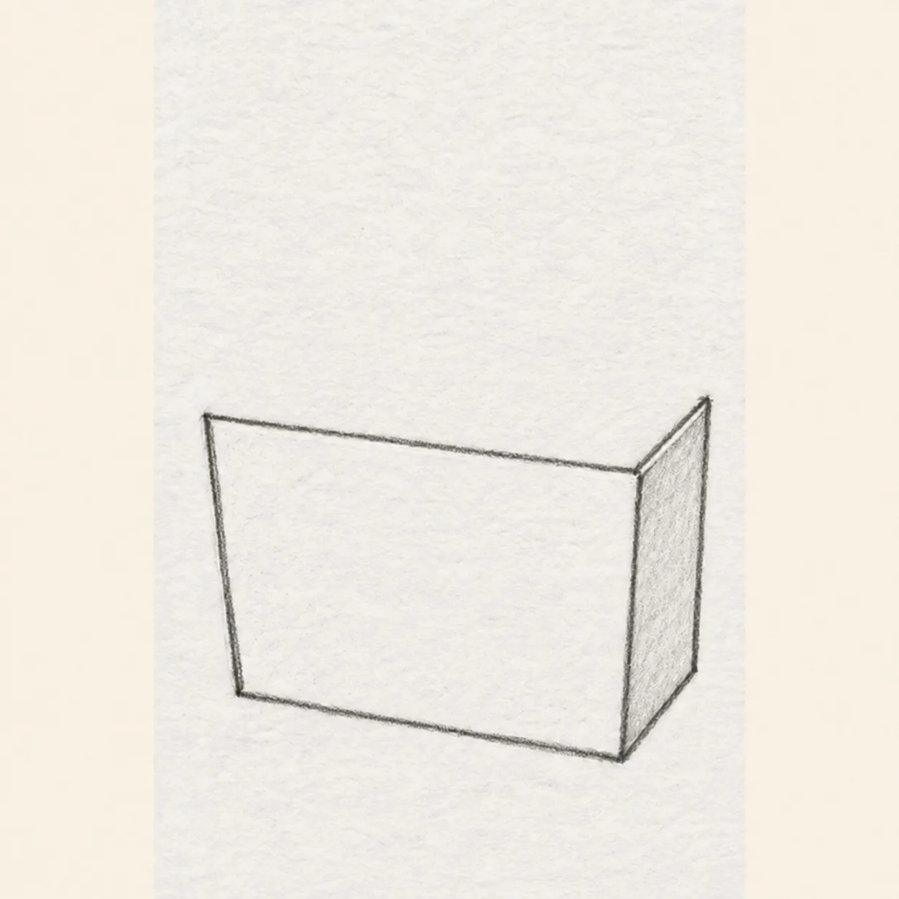
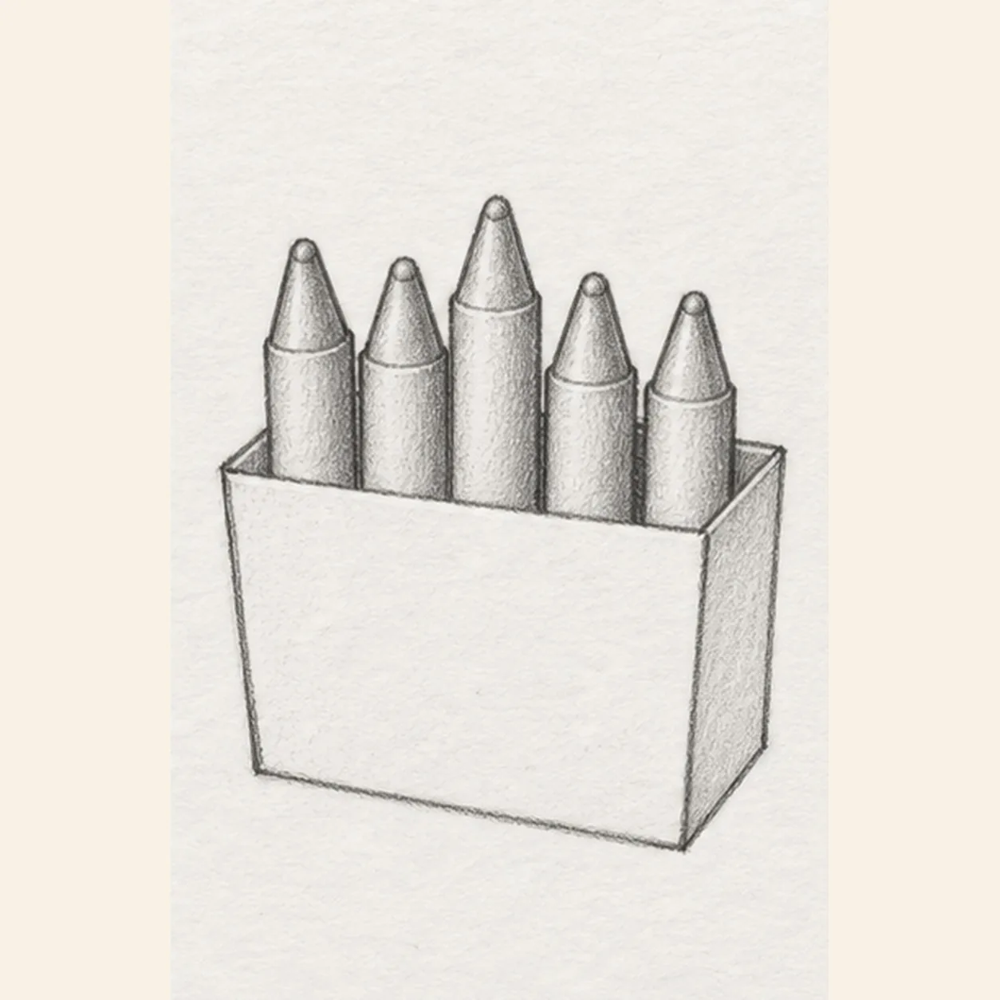
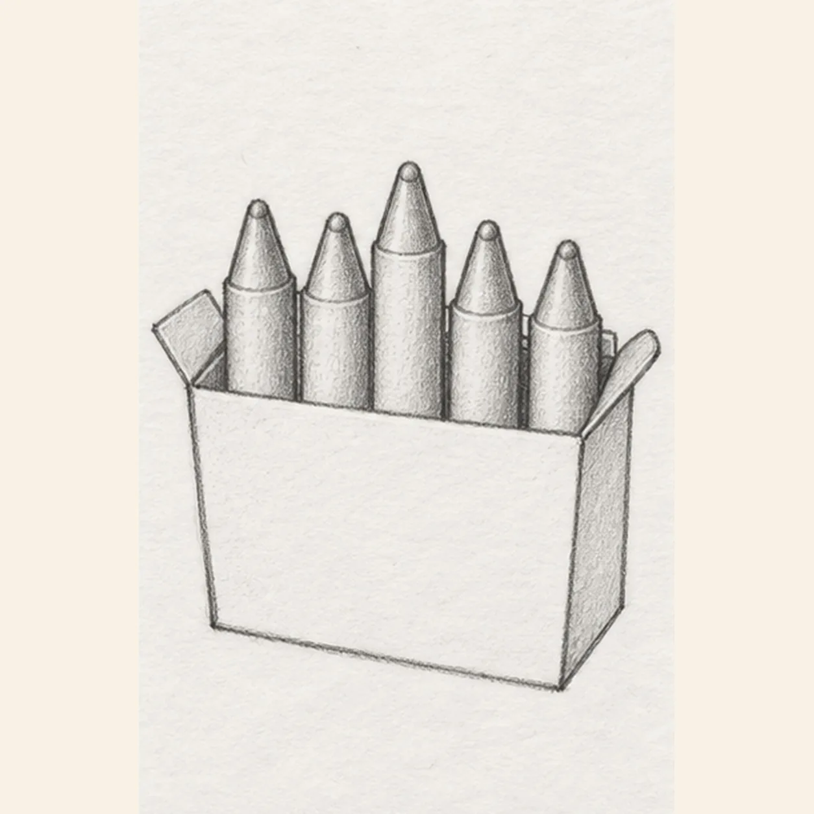
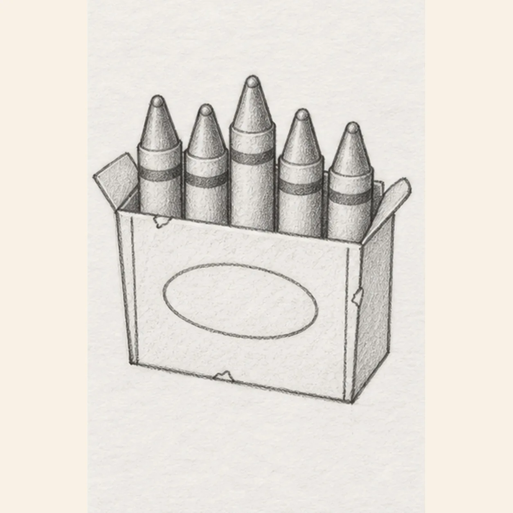
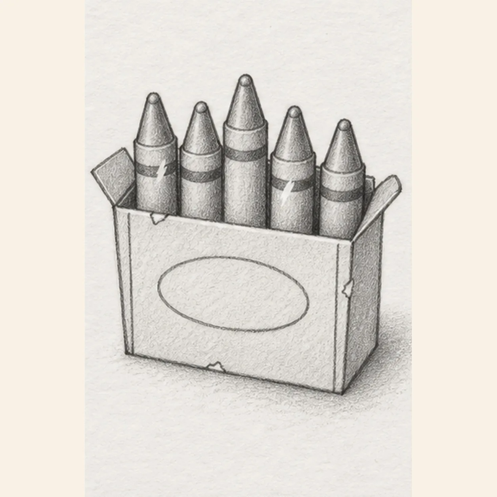

Pencil ready?
Let's draw a box of crayons
Treat this as one small practice round: build the subject lightly, notice the shapes, then darken only the lines that help the finished sketch.
-
01

Shape the carton front
Draw a broad shallow trapezoid for the box front. From its upper-right corner, angle one short line back, drop the outer side edge, and join it to the lower-right corner. Leave the whole area above the front top edge blank for the crayons.
Sketch tip: Keep this first step spare: one front plane and one outer side plane. Do not draw a back wall or inner rim that the crayons would immediately cover.
-
02

Stand up five crayons
From five separate positions just behind the front top edge, raise exactly five narrow parallel crayon shafts. Close each with two sloping tip edges and a small rounded wax point, varying the heights without changing their shared angle.
Sketch tip: Place the center crayon tallest, then compare the four negative spaces between shafts. Count five points before moving on.
-
03

Close the rim and fold the flaps
Connect the back rim only through the visible gaps between the five crayons, stopping every segment at a crayon edge. Fold one small flap outward from each side wall while keeping the front and all five crayon silhouettes unchanged.
Sketch tip: Trace the rim path with your finger and restart it after each crayon. This keeps the crayons in front without erasing a keeper line.
-
04

Add wrappers and carton details
Mark a wrapper collar below each crayon tip and place exactly one dark stripe band across each of the five wrapper areas. Center one blank oval label on the box front, place one short vertical seam near each front corner, and add exactly three small uneven wear nicks across the established edges.
Sketch tip: Wrap every band around the same shaft angle, then count five dark stripes, two seams, and three nicks. Leave the oval empty rather than inventing a brand.
-
05

Set the paper shine and shadow
Reserve exactly two small white highlight shapes on two different wrappers, shade the visible carton interior lightly, and place one soft broken shadow beneath and just right of the box.
Sketch tip: Use the side of a 2B pencil inside the box and under its lower-right edge. Keep both highlights crisp and the ground shadow broken.
-
06
![Handmade graphite and restrained colored-pencil sketch of one open warm-cream crayon box in three-quarter view with muted-coral side panels, exactly five crayons rising at varied heights in red, orange, golden yellow, teal, and blue, one pointed tip per crayon, exactly one dark wrapper band per crayon, exactly two outward carton flaps, one blank oval front label, exactly two short front seams, exactly three small wear nicks, exactly two open-paper wrapper highlights, visible paper tooth, and one broken cool-gray ground shadow](assets/open-box-of-five-crayons-finished-v1.webp)
Layer the crayon-box color
Layer red, orange, golden yellow, teal, and blue over the five established crayons from left to right. Add warm cream and muted coral to the same carton panels, cool gray to the existing shadow, and keep the graphite, blank label, wrapper bands, and both paper highlights visible without adding contours.
Sketch tip: Pull color strokes lengthwise down each crayon and across the carton planes. Count five crayons, five bands, two flaps, three nicks, and two highlights, then stop while the paper tooth still shows.